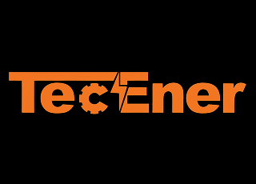

Материал компании

MITEX 2026 · Россия · Стенд 8F201
TecEner
Карточка проверена 10 ноября 2026, 09:28 · Источник ↗ · Снимок оригинальной карточки ↗
О компании
Производитель и прямой поставщик силовой техники, бензиновых, инверторных, дизельных генераторов от 2,5кВт и дизельных генераторных установок до 1МВт мощности. Фабрика основана в 2004 году и специализируется на исследованиях, разработке, производстве и продаже бензиновых и дизельных двигателей и механизмов. В число продуктов входят двигатели, электрогенераторы и мотопомпы. Зал 8, стенд F2 Более 80 000 м² производственная площадь Общий капитал более 70 мил юаней 400+ профессиональных сотрудников Годовая производственная мощность 1 500 000 ед. продукции
Контакты
Все контактные сведения из карточки
Контакты Центральный офис Телефон: +7 (495) 789-12-23 E-mail: info@tec-ener.u Адрес: 117216, Россия, Москва, Муниципальный округ Северное Бутово, ул. Академика Глушко, д.15 Веб-сайт: https://tec-ener.ru/ E-mail: info@tec-ener.u Телефон: +7 (495) 789-12-23
Все рубрики участника
Mitex - Рубрикатор
- 9. Компрессоры, генераторы, силовая техника
Зал
- Зал № 8
Участник выставки
- MITEX
Фотографии и изображения


Видео, каталоги и документы
Каталог продукции участника
Материалы каталога
Каталог продукции
Каталог продукции
Каталог продукции Вложения Каталог ТЕ-2Mb.pdf 01.11.2025 31 2.27 MB